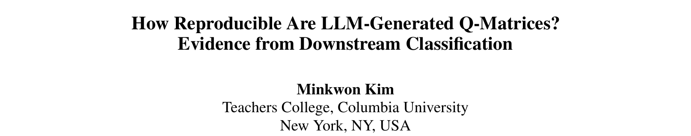
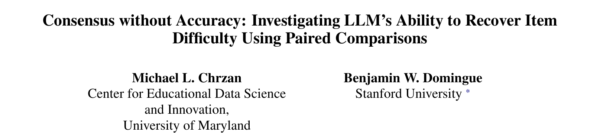
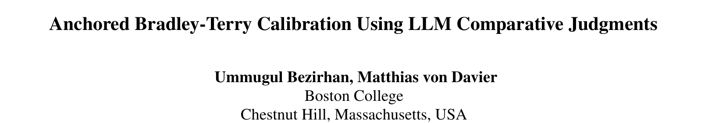
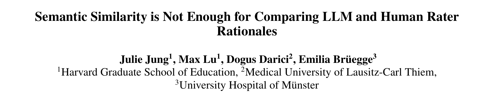

一致不等于正确
NCME 人工智能与教育测量会议（AIME-Con）上的四篇论文，分别检验了大语言模型在 Q 矩阵、题目难度和评分理由上的表现。放在一起读，它们揭示了三个容易混淆的性质：稳定性、一致性和效度。

美国国家教育测量委员会（NCME）于 2026 年 10 月 5–7 日在匹兹堡举办了第二届人工智能与教育测量会议（AIME-Con）。会议论文集已在 ACL Anthology 公开，包括 77 篇完整论文和 60 篇在研论文。其中许多研究让语言模型生成某种内容，再把它放进测量模型，例如题目与技能的对应表、难度估计，或附带理由的评分。
这种用法首先引出一个测量问题，它比速度或成本更优先。如果大语言模型的输出成为心理测量模型的输入，那么这个输出就是测量工具的一部分，需要接受与专家小组或人工评分员同等严格的审查。
三项检验，回答三个不同的问题
把三个性质分开，这些论文就容易读懂了。一个程序如果重复执行能得到相同结果，它就是稳定的；如果不同模型或不同运行得出相同答案，它就表现出一致性；如果结果与我们信任的外部标准相吻合（例如专家 Q 矩阵、已校准的题目参数或人工评分员的推理），它才对我们的目的而言是有效的。前一项检验通过，后一项仍可能失败。
取决于解码设置，以及是否报告了不止一次运行。
模型可能有相同的盲点，所以趋同并不是准确的证据。
需要以作答数据、已校准的锚题或人工判断作为参照。
1. 同一模型重新生成 Q 矩阵，大多数学生的分类随之改变

Q 矩阵规定了每道题需要哪些技能。在认知诊断中，它决定作答如何转化为每个学生的掌握模式。近期有几项研究让大语言模型根据题目文本起草这个矩阵，然后只报告一次运行的结果，或多次运行的多数投票结果。
Minkwon Kim（哥伦比亚大学师范学院）使用了 TIMSS 2011 八年级数学的 23 道公开题、一份已发表的七属性专家 Q 矩阵，以及 741 名美国学生的真实作答。三个开放权重模型（Qwen2.5-7B、Mistral-7B、Phi-3-medium）分别在采样解码下重新生成完整矩阵十次，在贪心解码下再生成十次。每份矩阵都用 DINA 模型拟合，然后比较得到的学生分类。
同一模型在相同提示词和温度下的两次采样运行，给 61% 到 88% 的学生分配了不同的掌握模式。贪心解码让每次运行逐字节完全相同，说明这种不稳定来自采样。但它没有解决与专家矩阵的分歧：仍有 63% 到 76% 的掌握模式不同。
常用的补救方法——跨运行多数投票——反而给出了最清楚的反例。投票得到的矩阵几乎每个单元格都与贪心矩阵相同，但那少数不同的单元格改变了一半甚至更多学生的诊断结果。
Kim 也指出了一个合理的限制：专家 Q 矩阵并非绝对真值，独立的统计验证已经对其中一些单元格提出质疑。模型在这些有争议题目上的分歧略高（每题 0.847 对 0.659），但置换检验没有达到常规显著水平（p = .060）。更有建设性的解读是：重新生成可以作为筛查信号，让模型不稳定的题目值得专家复查。
2. 七个模型彼此之间的一致，高于它们与数据的一致

让大语言模型直接给出绝对难度分数，效果一向不佳。成对比较的问题更简单：这两道题哪一道更难？Michael Chrzan（马里兰大学）和 Benjamin Domingue（斯坦福大学）让来自 OpenAI 和 Google 的七个前沿模型，对 Item Response Warehouse 中七个数据集的 179 道题进行成对比较，这些题都有基于作答数据校准的 1PL 难度。研究用分层贝叶斯 Bradley–Terry 模型汇总判断，同时估计每个模型的区分度及其偏向先呈现题目的倾向。
这些模型内部是一致的。大多数模型的三元传递性超过 95%，七个模型之间的一致性在每个数据集中都很高（Krippendorff’s α 为 0.834 至 0.917）。但合并后的排序与 IRT 难度只有中等程度的吻合（总体 Spearman ρ = 0.400），各数据集在 0.250 至 0.591 之间。
作者直接说明了原因：模型可能都抓住了显眼的文本特征、课程内容或解题复杂度，却忽略了真正让题目对作答者变难的因素。增加更多相似的评判者，只会让共同的排序更清晰，却无法纠正共同的构念偏差。评判者参数同样重要：各模型的区分度差异很大，有几个模型的位置偏差大到 94% 区间不包含零。作者的建议是给大语言模型的排序一个有限的角色：用于题目审查或粗略组卷的临时排序，而不是最终的校准参数。
3. 锚题有帮助，但只在其范围之内

Ummugul Bezirhan 和 Matthias von Davier（波士顿学院 TIMSS & PIRLS 国际研究中心）采取了其他研究所建议的设计。他们不只让新题彼此比较，而是让每道新题与已校准的锚题比较，并在 Bradley–Terry 模型中固定锚题的已知难度，从而把新题放到既有量尺上。
他们以 80 道 TIMSS 四年级数学趋势题作为锚题，以 101 道 TIMSS 2023 新题作为目标，并把 2023 年的正式难度留作验证、不参与估计。一个小型开放模型（Qwen3-8B，确定性解码）以三种不同提示词充当三位评判者，共产生 11,607 次成对判断。在全部 101 道题上，估计值与正式难度的相关为 r = .484。作者提醒这个数字被高估了，分组结果说明了原因。
在锚题范围内，相关为中等（r = .372）；低于该范围时，几乎没有恢复出任何信息。作者的结论是：该方法能内插但不能外推，而且比较网络的结构可能与评判模型的选择同样重要。另有两个细节值得注意：模型自报的置信度几乎每次都是 0.85，因此不含信息；它给出的“轻微”或“中等”差异标签反映的是它自己的确定程度，而不是真实难度差距的大小（r = −.02）。
4. 措辞相似不等于判断相同

在形成性评价中，分数背后的理由就是反馈。一些研究用基于嵌入向量的余弦相似度来比较大语言模型与人工的评分理由。Julie Jung 及其同事（哈佛大学教育研究生院，与德国的临床合作伙伴）检验了这个数字是否反映了真正重要的东西：大语言模型的理由是否保留了人工评分员的核心判断？
数据来自一项临床推理测评：21 名医学生、由 AI 模拟的病人问诊、一位人工评分员，以及 27 种 ChatGPT-5.4 配置（模型规模、推理强度和提示词类型），共得到 5,790 对评分理由。一个经过校准的编码流程把每一对标注为完全一致、部分一致或不一致，并把部分一致再细分为三种子类型。
相似度能把明显不一致的配对与其他配对区分开，但也仅此而已。它无法区分完全一致和部分一致。在部分一致的配对中，遗漏人工核心观点的理由与保留核心观点的理由得分一样高。文本长度也有干扰：89% 的配对中大语言模型的理由更长，长度差越大，相似度越低，与含义无关。用德语写的理由比英语理由低约 0.12。作者也谨慎地指出，他们的编码同样不是绝对真值。他们的观点更为具体：仅凭相似度，不能支持“大语言模型的理由可以替代人工理由”这一说法。
每项研究都发现了一种看似质量证据、实则不是的性质：完全相同的运行、模型之间的一致、较高的总体相关、较高的相似度分数。在每种情况下，真正关键的检验都是与外部标准的比较，而且每次都需要作者有意识地设计这种比较。
大语言模型辅助测量的报告清单
以下建议来自这四篇论文。我把它们归纳在一起，方便在审稿或设计研究时使用。
- 完整报告生成设置。模型及版本、温度、top-p、top-k 和随机种子。Kim 发现，他的运行中实际生效的 top-k 是模型自带的默认值 20，而不是读者通常以为的库默认值 50。
- 报告下游结果的分布。重复生成，并报告分类或参数在不同运行之间如何变化。单次运行或多数投票都会掩盖这种变化。
- 分别检验稳定性、一致性和效度。传递性、模型间一致性以及与作答数据的吻合是不同的性质，三者都要报告。
- 把判断与已校准的锚题联系起来，并说明其范围。锚题让大语言模型的判断可以在既有量尺上解释，但锚题范围之外的估计需要单独提示。
- 以作答数据和人工判断为标准。可以用大语言模型的输出标记需要复查的题目，或为草稿题库排序。支撑分数解释的参数，仍应由现场试测和专家审查来确定。
对印度尼西亚测评工作的意义
在印度尼西亚建设题库和诊断测验的团队，面临着与这些论文相同的压力：新题多、预测数据少、专家时间有限。大语言模型可以减轻这部分负担，而这些研究指出了它适合发挥作用的地方：标记技能对应不明确的题目，在锚定充分的范围内给出临时的难度排序，以及起草评分理由、再由人工检查其核心判断。它不应取代专家 Q 矩阵、现场试测或人工评分员作为参照点。四项研究使用的都是英文题目，或英文和德文的评分理由，因此用于印尼语题目时需要另行取得证据。
参考文献
Bezirhan, U., & von Davier, M. (2026). Anchored Bradley-Terry calibration using LLM comparative judgments. In Proceedings of the Artificial Intelligence in Measurement and Education Conference (AIME-Con): Full Papers (pp. 365–371). NCME. aclanthology.org/2026.aimecon-main.40
Chrzan, M. L., & Domingue, B. W. (2026). Consensus without accuracy: Investigating LLM’s ability to recover item difficulty using paired comparisons. In Proceedings of the Artificial Intelligence in Measurement and Education Conference (AIME-Con): Works in Progress (pp. 24–36). NCME. aclanthology.org/2026.aimecon-wip.4
Jung, J., Lu, M., Darici, D., & Brüegge, E. (2026). Semantic similarity is not enough for comparing LLM and human rater rationales. In Proceedings of the Artificial Intelligence in Measurement and Education Conference (AIME-Con): Full Papers (pp. 466–471). NCME. aclanthology.org/2026.aimecon-main.52
Kim, M. (2026). How reproducible are LLM-generated Q-matrices? Evidence from downstream classification. In Proceedings of the Artificial Intelligence in Measurement and Education Conference (AIME-Con): Full Papers (pp. 649–655). NCME. aclanthology.org/2026.aimecon-main.73
论文标题图片截取自各篇已发表 PDF 的第一页，仅用于识别与评述。图示中的所有数字均取自论文正文和表格；图表由我本人绘制。